Abstract
The proliferation of the World Wide Web (WWW) has made the idea of ``safe'' downloadable applications, or applets, very attractive. Applet computation, however, is usually inefficient, as it typically involves interpretation of the applet. This paper shows how applets can, in many cases, get high performance by using Cornell Untrusted Binary Applets (CUBAs) for their performance-critical parts. CUBAs are written in arbitrary machine code, and run directly on the CPU, thus achieving close to maximal performance, and are made safe through Operating System (OS) mechanisms of memory protection and system-call interception. The paper describes an implementation of CUBAs on Solaris 2.x, using Java and the Netscape 3.0 WWW browser, and gives results showing an order-of-magnitude increase in performance through the use of CUBAs.
Applets achieve safety by running in their own logical fault domain. A fault domain can be defined as a named region of memory, combined with the guarantee that code within it, when executed, can only interact with the rest of memory through a well defined interface, specified when the fault domain is created. A fault domain thus provides both memory-safety and interface-safety, i.e., code executing within a fault domain can only access memory and interfaces provided at the time of its creation. Many OSs provide fault domains in the form of hardware-protected address spaces, with the OS system-call entry points being a fixed interface for all address spaces. Another important safety property, sometimes tied to fault domains, is that of resource-safety, of not consuming too much of some resource, e.g., CPU time by going into an infinite loop [Seltzer96].
With the popularity of the Java applet mechanism for providing logical fault domains, the traditional method of using hardware- and OS-support has become largely ignored. By using hardware-support and OS system-call interception, any code, including arbitrary machine code, can be made memory-, interface- and resource-safe. The downside of using hardware-supported fault domains lies in the increased cross-fault-domain communication time. For compute-bound applets, however, hardware is often the best approach as shown in [Goldberg96], and in two recent evaluations of applet technology, [Small96] and [Banerji96].
Cornell Untrusted Binary Applets (CUBAs) are a mechanism for providing high-performance applets, based on the above observations. Figure 1 shows an overview of the approach: Each applet comes in two parts, one of which implements the interface to the system and the user, typically written in an interpreted language, and the other of which is the CUBA, a compute-server written in arbitrary machine code. The two parts communicate with each other through shared memory and some message facility. The CUBA is made safe by running it in its own hardware-supported fault domain, with all system calls being intercepted and only allowing a handful, after inspecting their arguments.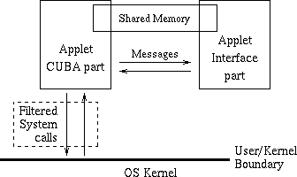 Figure 1: An overview of the approach: Every applet comes in two parts, an interface part, which uses some language-based applet scheme such as Java, and an Cornell Untrusted Binary Applet (CUBA) part, which is run in a separate hardware fault domain. The two applet parts communicate using messages, e.g., Inter-Process Communication (IPC), and shared memory. The CUBA part is prevented from making most system calls by some system-call interception or filtering scheme. The OS ensures the resource-safety of the CUBA part, preempting the processor and limiting use of other resources such as memory.
By splitting the applet into an interface part and a CUBA part, the applet can achieve high performance while retaining the full flexibility of interface applet system. This is a fortunate combination, since applet systems often have rich interfaces, e.g. to the screen and network, which at any rate are difficult to provide in a safe and efficient manner. By assuming the existence of an interface part the CUBA mechanism can be made simpler and more secure. Many software systems are constructed in a way which allows them to be split up into an interface part, and a computation server. Random examples of this are compilers, simulations, data compression tools, media renderers such as PostScript viewers, and 3-D games such as Quake [Abrash97].
In addition to the performance advantages of CUBAs they have the advantage of being language-independent, i.e., they can be written in any language, including assembly code. This allows applet writers to make use of any pre-existing code they may have access to. This practical advantage is perhaps more persuading than any other argument for CUBAs, since most companies have large code bases, and people are extremely reluctant to rewrite existing code, as is required by applet mechanisms such as Java. Language-independence, however, comes at the cost of losing interpreted code's platform independence. Even so, since 99% of computer users can be found on one or two platforms, this disadvantage may well be outweighed by CUBA's advantages.
The paper proceeds as follows: The next section discusses related work, including other applet mechanisms. Section 3 discusses the possible performance gains from using the CUBA approach in more detail, giving performance estimates based on a simple model. Section 4 describes an implementation of CUBAs on Solaris 2.x, using Java as the interface applet mechanism, and the Netscape 3.0 WWW browser as the system interface. Section 5 gives performance results for the implementation, including microbenchmarks and applet case studies. The paper concludes in Section 6.
Interpretation is a flexible scheme, allowing rich interfaces between applets, and is widely used, e.g., in Perl, Python, TCL, etc. [Gray96], and, for the most part, in Java. This flexibility comes, however, at the cost of running applets an order of magnitude, or more, slower than using other methods. Interpretation can be combined with run-time code generation and compilation to improve performance. In Just-in-Time (JIT) compilation the browser compiles applet modules as they are used during the applet execution. JIT is the method currently most popular in the context of Java and the WWW. In [Plezbert97] the authors show that by using interpretation and heuristics for compilation time selection they can get total execution time within 5%-20% of optimal. Continuous compilation, from [Kistler96] as well as [Plezbert97], compiles the applet in the background, while it is running. By using profiling information or prediction heuristics code can then be selected for optimization and specialization at run time. Unfortunately JIT and continuous compilation will often not improve the applet run time, at least on uniprocessors, since the total running time for the applet includes compilation and optimization, as well as its run time.
Type-safe languages, such as Java, ML [Milner90], and Modula-3 [Nelson91], combine the speed of compiled code with strong safety properties [Bershad95] [Morrisett96]. Safety is achieved by restricting the language so that unsafe operations cannot be expressed, and so types can be inferred for all operations. The safety properties enforced are stronger than those of other methods, e.g., guaranteeing correctness of data structures, as well as memory- and interface-safety. There are, however, practical difficulties in the efficient implementation of type-safe languages, due to the enforcement of abstractions such as automatic memory management, which needs the expensive mechanism of garbage collection.
Proof-Carrying Code [Necula97] is a generalization of type-safe languages. Here the code, be it source- or machine-level, carries with it a proof of safety. This proof is usually hard to generate, but can be verified relatively easily. This method is promising, but it seems doubtful that it can be scaled up to any but the most trivial of applets. This is due to a number of unsolved problems, e.g., how to easily construct a proof for a large applet.
Software Fault Isolation [Wahbe93] [Adl-Tabadabai96], is a method which adds of run-time checks to the machine-code of applets, such that the applet, when run, cannot perform illegal operations. Such augmented code can be validated very quickly, even as fast as linear in the code size. Software Fault Isolation, especially its incarnation in Omniware [Adl-Tabadabai96], is an attractive method for providing logical fault domains within an address space. It does however slow down the execution of the applet code by a significant amount, anywhere from 5% to 100% [Small97].
Hardware-based protection, used by the CUBA method, has the main disadvantage of potentially high run-time cost when applets communicate very frequently through messages. In this case each message requires a context switch, which is a high-cost OS operation, except in some experimental OSs [Engler95] [Liedtke95]. In many cases, however, it is the best method for achieving high-performance applets, as shown here.
To evaluate the possible advantages of the CUBA approach it is helpful to examine a simple model: Assume that an applet is constructed in such a way that it spends most of its time in the interface, but occasionally performs a non-trivial computation. The applet can either perform this computation in the interface part, or in the CUBA part. If the computation takes place in the interface it is likely to run slowly, but if it takes place in the CUBA there is a fixed communication time resulting from context-switching overhead in crossing fault domains.
| 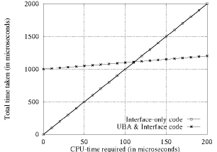 | 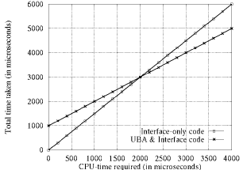 |
| (a) | (b) |
Figure 2: Time required to perform a single compute-bound call using interface code, and CUBA combined with interface code, assuming a 1 millisecond time for communication with the CUBA. The left-hand-side shows the required time if interface code runs 10 times slower than native code, i.e., the code running in the CUBA. In this case it is faster to perform the call in the CUBA if the interface code for the call takes more than 111.11 microseconds. The right-hand-side shows the situation if interface code runs 50% slower, in which case CUBAs get beneficial for calls taking more than 2 milliseconds.By assuming a constant communication time and a constant computation-speed advantage for CUBAs we can find the minimum computation time for which it is preferable to use CUBAs. Figure 2a shows that if communication time is 1ms and CUBA code has a tenfold speed advantage, then any computation taking longer than 111.11us is better done in the CUBA. Figure 2b shows that if the computation-speed advantage is 50% the break-even point is 2ms. In the latter case, however, there is less to gain by using CUBAs, since best possible speedup is only 50%. If this qualitative difference is ignored, however, all the break-even points for communication times of 1ms, while varying the speedup, can be plotted, as is done in Figure 3.
| 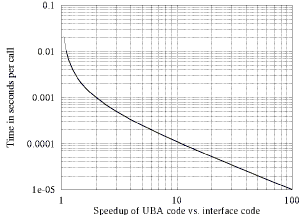 | 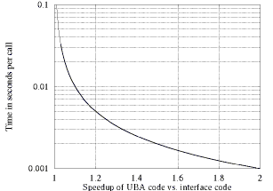 |
| (a) | (b) |
Figure 3: Break-even points (results of intersections as in Figure 2) for a a single compute-bound call assuming a 1 millisecond time for communication with the CUBA. The right-hand-side shows in more detail the situation when CUBA code is less then twice as fast as interface code.From Figure 3 we can see that anything taking more than one millisecond is worth doing in an CUBA, if the CUBA computes twice as fast as the interface part. Anything more than 100us, however, is worth doing in an CUBA if it is 10 times faster than the interface. Thus it is, e.g., probably worth computing a video frame from a compressed video format in the CUBA, since there are only a few tens of frames per second, and the interface part is probably more than twice as slow as the CUBA for this computation. These numbers, however, assume that communication time is one millisecond, which is very conservative [Engler95] [Liedtke95] [Small96].
| 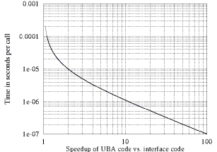 | 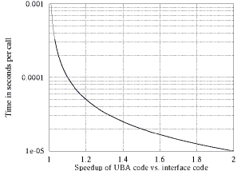 |
| (a) | (b) |
Figure 4: Break-even points for a a single compute-bound call assuming a 10 microsecond time for communication with the CUBA. The right-hand-side shows in more detail the situation when CUBA code is less then twice as fast as interface code. Note that the graphs are the same as those in Figure 3, apart from the curves being two orders of magnitude lower.Using contemporary CPUs and OSs it is not an impossible goal to have communication times of only 10 microseconds. This should, however, be taken as a lower bound on the communication time. Figure 4 shows the resulting break-even time graphs. As can be seen, almost all substantial computation is worth performing in the CUBA, even when the interface part is using a high-performance applet mechanism, such as Software Fault Isolation or compiled type-safe languages.
The policy for whether or not to allow a CUBA system call is usually a simple one. An OS designed to support CUBAs could implement most of this policy using a simple set of allowed system calls, with the rest of the policy only needing a few simple checks at each call. The policy is therefore best placed inside the kernel, as in Figure 5, to save on context switch time. In this case the only overhead from using CUBAs would lie in sending messages between the fault domains. As mentioned before, this overhead is becoming very small, especially when the OS uses specialized communication mechanisms, such as LPC.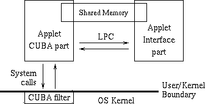 Figure 5: A near-optimal implementation of CUBAs, assuming OS support: The CUBA filter mechanism resides inside the kernel, with filter policy being decided at CUBA creation time, thus allowing almost unhindered system calls. Messages between applet parts are sent using a fast Local Procedure Call (LPC or LRPC) mechanism, with only individual threads being blocked on send/receive.
The prototype implementation for this paper is based on Solaris 2.x, Java, and to a degree the Netscape 3.0 WWW browser. The CUBA and Java parts of an applet are run in separate processes, which provide the fault domains. The system-call interception mechanism runs as a separate process. Messages between the applet parts are sent using the System V IPC facility of Solaris 2.x, and System V shared memory is used. One difficulty stemming from the IPC mechanism is that blocked send/receive blocks the entire process, not just the calling thread. To solve this the interface part has to poll the message queue, significantly hurting performance.
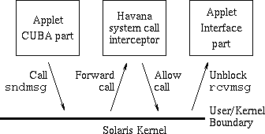 Figure 6: An IPC message being sent from the CUBA to its interface, in the current implementation. The sndmsg system call is forwarded by the Solaris kernel to the Havana process which allows it, and then returns to the kernel which then finally sends it to the interface. Note that this requires scheduling three processes onto the CPU.
| |||||||||||||||||||||||||||||||
| Table 1: System calls allowed for CUBA processes. |
Using the /proc/PID pseudo-file a process can declare itself interested in several types of events for process no. PID, including system calls. The monitoring process then waits blocked in an ioctl call until an interesting event happens in the monitored process. For system-call interception the monitor blocks until an PIOCSENTRY event happens, at which time all threads in the monitored process stop, and control is transferred to the monitor. To abort the system call the monitor performs a PIOCRUN request with the PRSABORT flag set, at which time the monitored process resumes with an EINTR system-call failure.
Table 1 lists all system calls which an CUBA can successfully make. Most of these are there because they are used in the C library startup code, e.g., for memory management. The three last ones, however, are needed for CUBA support, getpid and msgsys for IPC messaging, and shmsys for shared memory. Only the last two system calls, those for IPC and shared memory, are actually intercepted, the others are allowed with any arguments. The last two, however, are filtered: msgsys so it only allows msgget, msgsnd & msgrcv to/from the interface process, and msgctl only to check queue availability; shmsys so it allows shmget and shmdt, and shmat on an interface-part created shared memory region.
The Havana process handles one additional tasks in this implementation, that freeing up resources. This is necessary, because the interface process may crash (as is common in the case of Netscape), and the CUBA process must be killed at that time, to avoid resource consumption by defunct CUBAs. The Havana process therefore checks periodically whether the interface is still running, by handling a repeating alarm signal. Additionally the Havana process deletes the IPC channel between the applet parts at termination. This is necessary since in the Solaris 2.x OS these channels are a limited resource which is not maintained automatically, i.e., a user id can own a message channel even if there is no process running on its behalf.
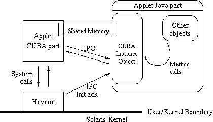 Figure 7: An CUBA running on behalf of a Java application. There are three processes involved: the Java runtime, the CUBA applet, and finally the Havana system-call interceptor. There can be many CUBAs running at any time, with each represented by a separate Java object. The CUBA communicates with its corresponding Java object instance the IPC and shared-memory. Note that for each CUBA instance there is an additional Havana process, as well as a new CUBA process. The CUBA is started up and shut down by the Havana process, and, in case the Java runtime abnormally terminates, Havana automatically kills the CUBA and itself, after a worst-case timeout of 30 seconds.
The Netscape platform turned out to be quite irksome to develop for, as it often crashed unexpectedly and there is no debugging support. In the end most of the bugs were isolated to be caused by the interaction of Java-threads and the native Plugin code. In particular the two following bugs were found: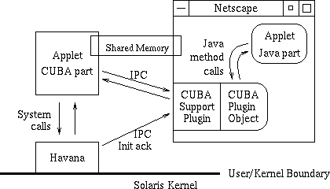 Figure 8: An CUBA running on behalf of a Netscape Java applet. This case is similar to that of Java applications: For each instance of a Netscape Java applet making use of CUBA services there are additional instances of Havana, the CUBA plugin and its object, as well as a new CUBA process. The CUBA communicates with its corresponding Java applet through the IPC and shared-memory services provided by the plugin. If Netscape terminates abnormally, Havana kills itself and the CUBA after a timeout.
| ||||||||||||||||
| Table 2: The time required for starting Havana and an CUBA, and time per IPC message roundtrip, i.e., per an LPC (or LRPC). CUBA start time is shown for both cold- and warm-cache process forking. IPC time is given for normal IPC between two processes, and for when the Havana process filters the system calls of one of the processes. |
Of even more critical importance to the CUBA method is IPC performance. This is the crucial factor in evaluating tradeoffs between CUBAs and different applet mechanisms, as shown in Section 3. Normal IPC performance in Solaris 2.x is disappointing, around three times that of the Mach OS [Liedtke96]. It gets much worse, however, when the Havana process intercepts the IPCs, as in Figure 6. On the multi-processor Sparc20 it doubles, but on the Sparc5 it more than triples. The latter is somewhat surprising, but is probably due to the higher cost of context switching between processes on the single CPU system, with, e.g., cache flushes playing a more significant role there.
| C | CUBA Java | Java | Toba | Modula-3 | Omniware | ||
|---|---|---|---|---|---|---|---|
| Policy (Virtual Memory Page Eviction) |
Raw time | 4.5us | No benefit over Java | 141us | 36.9us | 6.3us | 6.3us |
| Normalized | 1.0 | 31.3 | 8.2 | 1.4 | 1.4 | ||
| Std. dev. | 0.1% | 0.3% | 0.1% | 2.8% | 0.2% | ||
| Functionality (Log-structured Logical Disk) |
Raw time | 7.2us | No benefit over Java | 94us | 29.3us | 11.1us | 8.4us |
| Normalized | 1.0 | 13.1 | 4.1 | 1.5 | 1.16 | ||
| Std. dev. | 0.2% | 0.4% | 2.8% | 0.4% | 0.1% | ||
| Performance (Message Digest 5) |
Raw time | 146ms | 158ms | 10368ms | 3324ms | 294ms | 219ms |
| Normalized | 1.0 | 1.08 | 71.0 | 22.8 | 2.0 | 1.5 | |
| Std. dev. | 1.7% | 3.2% | 0.3% | 6.1% | 0.1% | 0.0% |
Table 3: Performance numbers for different applets and applet mechanisms from [Small96]. The applets can be classified respectively as Policy, Black-box and Stream extensions. The first applet selects a page to be evicted from physical memory in a virtual memory system; the second maintains a mapping between logical and physical disk blocks; the third computes an MD5 hash of 1MB of data. The first two applets compute for a very brief time, and are thus not suitable for the CUBA approach. The applet mechanisms are, respectively: None (plain C), CUBAs combined with Java, plain Java, compiled Java (Toba), type-safety using Modula-3, and software-fault-isolation with Omniware. The CUBA Java and Toba times have been scaled down by 33% to allow comparisons with the other values.Table 3 shows the performance of several applet mechanisms for applets in each category. The numbers are mostly from [Small96], where they were got on a 75MHz single processor Sun SPARCStation 20. This paper adds two columns to the table, those for CUBA Java and for Toba, which is a Java compiler described in [Proebsting97]. Toba generates very efficient code from the Java class files, and its output code should have better performance than achievable with current JIT or continuous compilers.
The Virtual Memory and Logical Disk applets have a Java call time of around 100us, and using the simple model of Section 3 they are therefore not candidates for speeding up using CUBAs. Even so, it is rewarding to examine relative performance of the different applet mechanisms for these applets, as well as the MD5 one. As expected, Modula-3 and Omniware have very good performance, only a few tens of percent slower than C. Java has terrible performance, and, somewhat surprisingly, so does Toba-compiled Java. This may be due to the difficulty of mapping Java's virtual stack machine to efficient code. Finally, and pleasantly, the Java CUBA combination turns out to have the best performance of all applet mechanisms for MD5, with a 66-fold speedup over plain Java.
From the communication and computation times in Tables 2 and 3 the model of Section 3 can be compared against actual measurements. By assuming an MD5 of 1KB of data takes 142.6us, that IPC takes 550us, and that Java runs 71 times slower than C, the model gives the lines of Figure 9. The empirical results also shown there is almost exactly those predicted by the model, with the small discrepancies present being more than accounted for by random system activity and context-switching effects.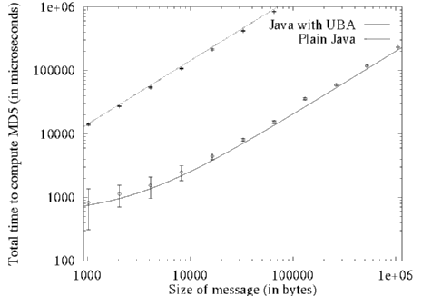 Figure 9: Time required for computing an MD5 hash for different sized messages, as predicted by the model of Section 3, and empirically measured. The lines show predicted behavior, while the points give the mean, and the errorbars one standard deviation from it in either direction, from the results of 30 runs on the Sparc20. The upper line is plain Java, while the lower is CUBA Java.
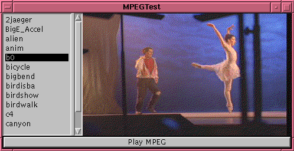 Figure 10: One of 100 MPEG video frames of a ballet sequence, displayed in a Java window.
| |||||||||||||
| Table 4: Time required for decoding and viewing the ballet MPEG video of Figure 10. The first column is the time required to just decode, not display, the MPEG. The viewers, mpeg_play and MPEGTest, use X and Java to display the frames, respectively. Relative performance is shown in parentheses. |
Table 4 some performance numbers for the MPEG viewer, and for the X mpeg_play viewer which has the same decoding routines. Note that on the Sparc20 the bottleneck is Java displaying the frames, since the decoder is running on a separate processor, and can decode the next frame while the interface is displaying the last one. On the Sparc5 the viewer spends two-thirds of its time in the Java AWT. Many WWW applets are interface-bound in this manner, but as can be seen from the performance of the mpeg_play viewer this is unacceptable performance from the Java AWT bitmap-display routines.
The reader is encouraged to visit http://www.cs.cornell.edu/home/ulfar/cuba/ where the Netscape version of CUBAs can be downloaded, and the MPEG applet can be run. Enjoy the ballet!